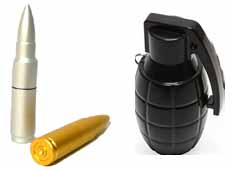
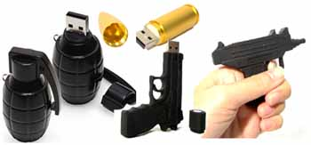

A imagem pode parecer mais uma das (infelizmente) habituais apreensões feitas nas delegacias do Rio de Janeiro. Mas na verdade é mais uma daquelas invenções "xing-ling", direto da China.
O que parece ser uma réplica de munição para fuzil calibre 5,56, ou uma granada ofensiva, na verdade não passa de um pen drive. Diz o produtor do brinquedo-utilidade, que o objeto preserva os dados gravados sob condições adversas: é a prova de calor, de frio, de choque, e se deixar ele fala até que resiste a um ataque nuclear (como as baratas, reza a lenda...).
Custa 20 dólares a unidade com 2Gb de capacidade de armazenamento, procurando no Google você encontra onde comprar.
É, no mínimo, curioso. Tem pen drive em formato de munição, de granada, de pistola e até de submetralhadora. Só louco.
